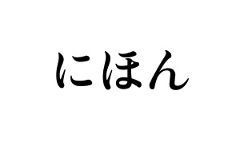
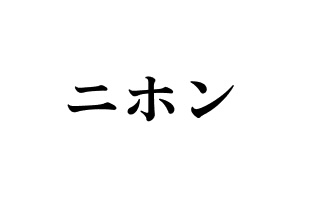
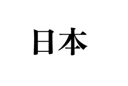
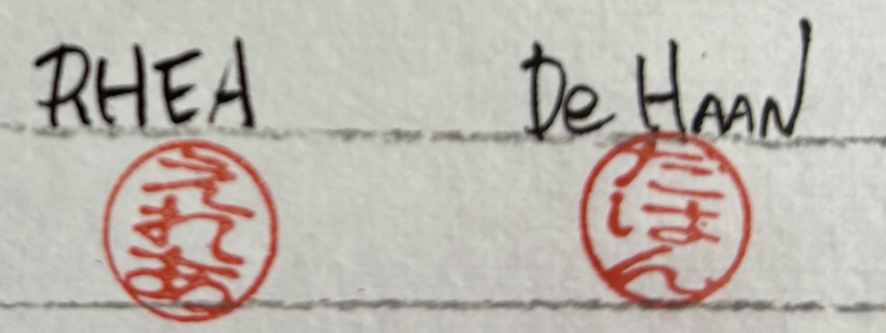
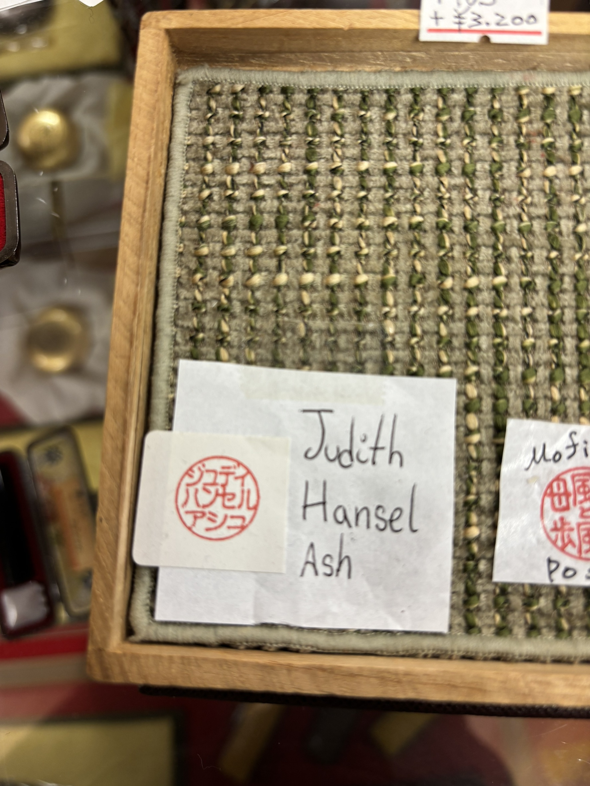
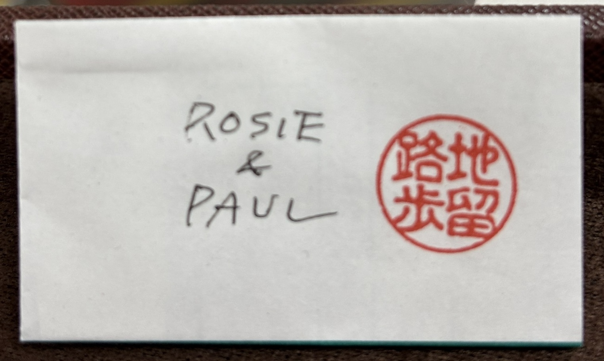

Hiragana

Hiragana is one of the three writing systems. It is mainly used for Japanese words and grammar endings.

Japanese uses three writing systems: Hiragana, Katakana, and Kanji. Each system has a different purpose and is used in different situations.

Hiragana is one of the three writing systems. It is mainly used for Japanese words and grammar endings.

Katakana is mainly used for foreign words, foreign names, and some words used for emphasis.

Kanji are characters that carry meaning.
The meaning behind Kanji| System | Main Purpose | Number of characters |
|---|---|---|
| Hiragana (ひらがな) | Phonetic script | 46 |
| Katakana (カタカナ) | Phonetic script | 46 |
| Kanji (漢字) | Meaning-based characters | Thousands(2000 + commonly used) |


